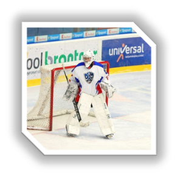

Player Characteristics:
- SDUSHOR named after Ruslan Saley (SDUSHOR U16, U17, U18).
- Candidate for the national team U17.
- In the 2019/2020 season participated in the international tournament of the Carpathian League.
- In 2019 participated in the international tournament in Poprad (Slovakia) as part of the Poland Select
team.
- The best goalkeeper of the SDUSHOR in the 2018/2019 season.
- The best goalkeeper of the SDUSHOR in the 2019/2020 season.
- The best goalkeeper of the SDUSHOR in the 2020/2021 season.

Alex Khudyakov
- Date of birth: 15.07.2004
- Place of birth: Minsk, Belarus
- Country: Belarus
- Position: Goalkeeper
- Grip: Left
- Height: 178
- Weight:78